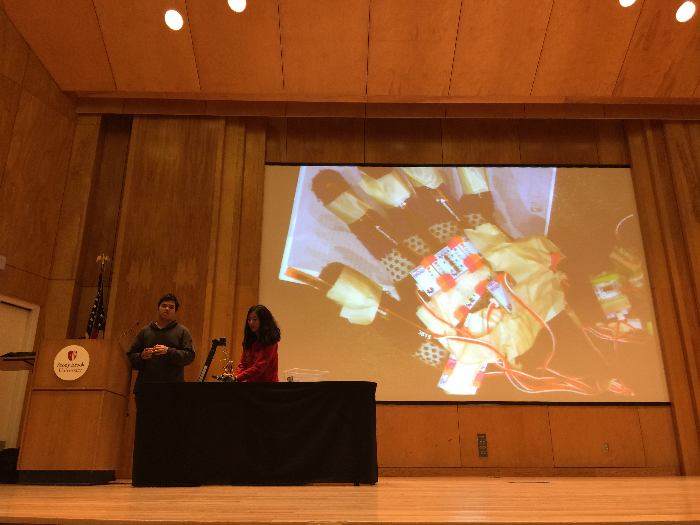
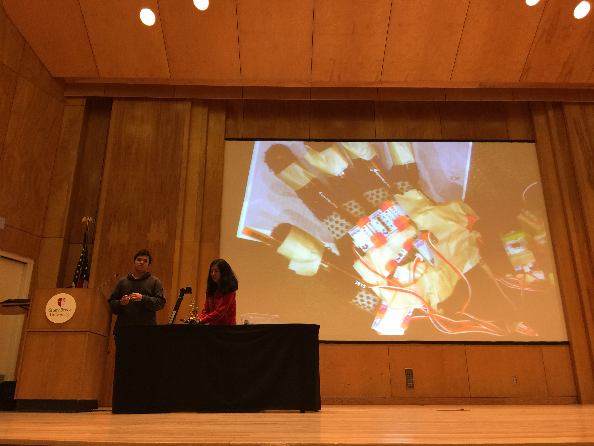

Hand Augmentation
2016

Our mission with the Hand Augmentation project was to establish a link between the user's hand and a crafted artificial counterpart, enabling real-time mirroring of movements.
I proposed using “hand” as our topic, seeing it as the source of creating. Hands are our primary tools for connection, expression, and precision, and by replicating their movement through technology, we aimed to capture that essence. Using resources from the university’s maker lab—Little Bits, bend sensors, and custom circuits—we crafted a system that mimicked intricate hand motions. Sensors on the glove detected finger movements, sending signals to servo motors in the artificial hand, achieving control over each finger. The hand’s framework, built from repurposed plastic utensils, was a deliberate choice to emphasize resourcefulness. This prototype represents a foundation, where technology could eventually extend the human touch to remote or challenging environments, illustrating how small gestures can evolve into broader applications.
🏆: Hackfeat - 1st Place (2016)
🗣️: Research Technologies & Innovation, Evening of Innovation, Charles B. Wang Center Chapel, Stony Brook, NY (2016)
 
